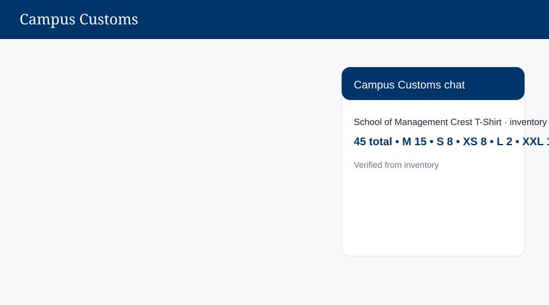
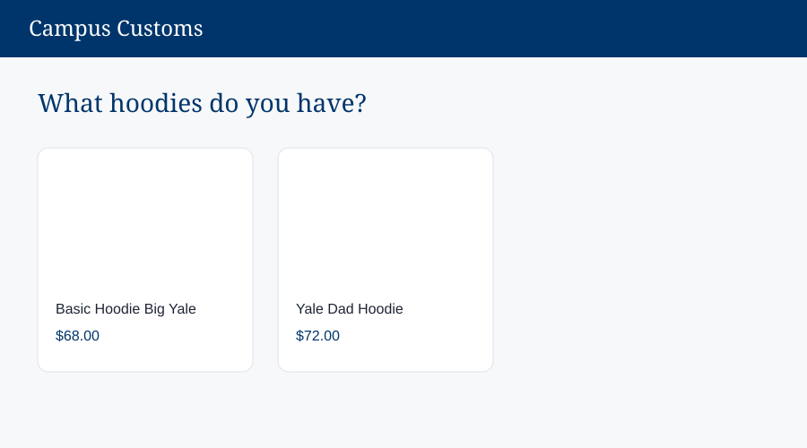
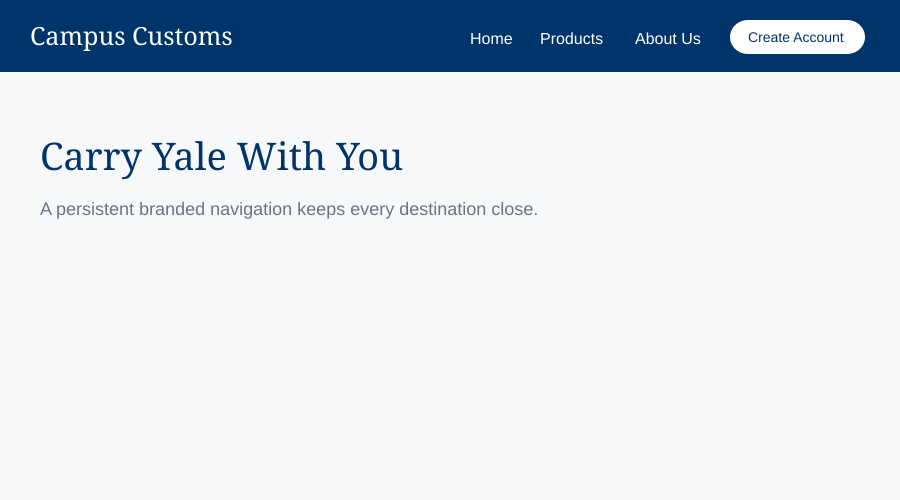

The chat reports the database-backed total of 45 units and the exact quantity for each size, including XL as sold out. This proves stock answers use real inventory data.

A hoodie category question produces structured product cards with names and prices. Each card can link to the same full product detail page used by the Products grid.

The sticky Yale-blue header keeps Home, Products, About Us, Log In, and Create Account visible while browsing. This makes the main shopping and account paths easy to reach.